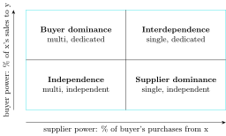

Definition
Relations should be analysed from the supplier's side too. Power matrix (Scott and Westbrook 1991):
- buyer's power over the supplier = share of supplier x's revenue coming from customer y;
- supplier's power over the buyer = share of customer y's purchases (of that item) bought from supplier x.
Model
| Buyer power \ supplier power | Low | High |
|---|---|---|
| High (y big share of x sales) | Buyer dominance | Interdependence |
| Low | Independence | Supplier dominance |
Fujimoto (1997), four situations:
| Fujimoto case | Power position | Meaning |
|---|---|---|
| Single sourcing, dedicated | interdependence | mutual dependence; |
| supplier | collaboration likely | |
| Single sourcing, independent | supplier dominance | supplier has many clients, |
| supplier | more bargaining power | |
| Multi sourcing, dedicated | buyer dominance | supplier depends and |
| suppliers | competes with others | |
| Multi sourcing, independent | independence | most complex: hard to |
| suppliers | collaborate |
Power balances change over time ("when the balance shifts…"): a dedicated supplier that gains other customers moves from interdependence towards supplier dominance.
Worked example
Supplier X sells 40% of its revenue to Y (high buyer power); Y buys 90% of that component from X (high supplier power) → interdependence: invest in joint development. If X's revenue share from Y drops to 5% while Y still buys 90% → supplier dominance: Y should qualify a second source or redesign.
Pitfall
Dependence is measured on both shares; the buyer's size alone does not determine power. Independence is not "safe": it makes collaboration hardest.
Recall
Draw the power matrix with its two axes defined; place the four Fujimoto cases.
Picture

Each Fujimoto sourcing pattern lands in a different power quadrant.